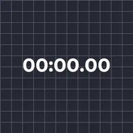

Timecode

Sostituisce il testo di un livello con un orologio in corsa del tempo del livello o del progetto. Parti da e una velocità negativa creano un conto alla rovescia.
Impostazioni
| Impostazione | Tipo | Intervallo | Predefinito |
|---|---|---|---|
| Formato | Scelta | HH:MM:SS:FF, HH:MM:SS, MM:SS, MM:SS.hh, SS.hh, Fotogrammi | HH:MM:SS:FF |
| Tempo | Scelta | Livello, Progetto | Livello |
| Parti da | Numero | Da -360000 s a 360000 s | 0 s |
| Velocità | Numero | Da -100 a 100 | 1 |